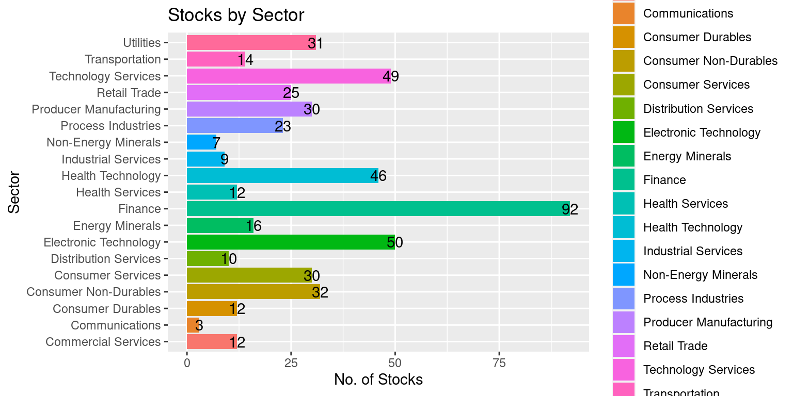

# Load the required libraries, suppressing annoying startup messages
library(dplyr, quietly = TRUE, warn.conflicts = FALSE) # For data manipulation
library(tibble, quietly = TRUE, warn.conflicts = FALSE) # For data manipulation
library(ggplot2, quietly = TRUE, warn.conflicts = FALSE) # For data visualization
library(ggpubr, quietly = TRUE, warn.conflicts = FALSE) # For data visualization
library(gsheet, quietly = TRUE, warn.conflicts = FALSE) # For Google Sheets
library(rmarkdown, quietly = TRUE, warn.conflicts = FALSE) # For writing
library(knitr, quietly = TRUE, warn.conflicts = FALSE) # For tables
library(kableExtra, quietly = TRUE, warn.conflicts = FALSE) # For tablesLive Case: Overview of the S&P500
Chapter 17, Last updated: Dec 30, 2023
S&P 500
The S&P 500, also called the Standard & Poor’s 500, is a stock market index that tracks the performance of 500 major publicly traded companies listed on U.S. stock exchanges. It serves as a widely accepted benchmark for assessing the overall health and performance of the U.S. stock market.
S&P Dow Jones Indices, a division of S&P Global, is responsible for maintaining the index. The selection of companies included in the S&P 500 is determined by a committee, considering factors such as market capitalization, liquidity, and industry representation.
The S&P is a float-weighted index, meaning the market capitalizations of the companies in the index are adjusted by the number of shares available for public trading. https://www.investopedia.com/terms/s/sp500.asp
The performance of the S&P 500 is frequently used to gauge the broader stock market and is commonly referenced by investors, analysts, and financial media. It provides a snapshot of how large-cap U.S. stocks are faring and is considered a reliable indicator of overall market sentiment.
Typically, the S&P 500 index consists of 500 stocks. However, in reality, there are actually 503 stocks included. This discrepancy arises because three of the listed companies have multiple share classes, and each class is considered a separate stock that needs to be included in the index.
Strengths:
Diverse Representation: The S&P 500 isn’t fixated on a single industry. From technology to healthcare, it offers a panoramic view of various economic sectors, making it an inclusive representation of the U.S. corporate sector.
Benchmark for Investors: For many fund managers, outperforming the S&P 500 stands as a golden standard. It’s a yardstick, establishing it as a critical touchstone for gauging investment success.
Liquidity and Visibility: Constituent companies enjoy high liquidity and are subject to rigorous screening processes, ensuring that the index represents financially viable entities.
Critiques:
Market Capitalization Weighting: The index is weighted by market capitalization, meaning companies with higher market values have a more pronounced effect on its performance. Critics argue this approach can skew perceptions, especially during market bubbles when certain sectors are overvalued.
Exclusivity: Despite its broad purview, 500 companies cannot encapsulate the entire U.S. economy. Many sectors, especially emerging industries or smaller businesses, might not be adequately represented.
Potential for Complacency: The prominence of the S&P 500 has led many investors to adopt passive investment strategies, tracking the index rather than actively managing portfolios. Detractors argue this might lead to market inefficiencies and reduced capital allocation efficacy.
While the S&P 500 remains an influential and pivotal tool for investors, its dominance prompts a double-edged sword of advantages and critiques. In a constantly evolving economic landscape, understanding both its power and limitations is essential for informed financial decision-making.
References:
S&P Global: S&P Global. (n.d.). S&P 500. Retrieved September 14, 2023, from https://www.spglobal.com/spdji/en/indices/equity/sp-500/
MarketWatch: MarketWatch. (n.d.). S&P 500 Index. Retrieved September 14, 2023, from https://www.marketwatch.com/investing/index/spx
Bloomberg: Bloomberg. (n.d.). S&P 500 Index (SPX:IND). Retrieved September 14, 2023, from https://www.bloomberg.com/quote/SPX:IND
S&P 500 Data
Load some useful R packages
Read the S&P500 data from a Google Sheet into a tibble
We will analyze a real-world, recent dataset containing information about the S&P500 stocks. The dataset is located in a Google Sheet and periodically updated.
The complete URL of the Google Sheet that has the data is
https://docs.google.com/spreadsheets/d/14mUlNNpeuV2RouT9MKaAWKUpvjRijzQu40DdWJgyKPQ
- The Google Sheet ID is:
14mUlNNpeuV2RouT9MKaAWKUpvjRijzQu40DdWJgyKPQ.
TO BE DELETED
OLD: 11ahk9uWxBkDqrhNm7qYmiTwrlSC53N1zvXYfv7ttOCM.
TO BE DELETED
We can use the function gsheet2tbl in package gsheet to read the Google Sheet into a tibble , as demonstrated in the following code.
# Read S&P500 stock data present in a Google Sheet.
library(gsheet)
prefix <- "https://docs.google.com/spreadsheets/d/"
sheetID <- "14mUlNNpeuV2RouT9MKaAWKUpvjRijzQu40DdWJgyKPQ"
url500 <- paste(prefix,sheetID) # Form the URL to connect to
sp500 <- gsheet2tbl(url500) # Read it into a tibble called sp500- Reference: This data has been sourced from websites like Yahoo Finance and TradingView.com and it is current as of 29Dec2023
Review the S&P 500 data
- The data corresponds to 503 companies that are part of the S&P500 and includes 36 data columns.
dim(sp500)[1] 503 36- The first ten stocks in the S&P500 data, their Sector and their recent prices are as follows:
sp500 %>%
select(Stock, Description, Sector, Date, Price) %>%
head(10) %>%
kable("html", caption = "The first 10 companies in the S&P500 dataset") %>%
kable_styling()| Stock | Description | Sector | Date | Price |
|---|---|---|---|---|
| AAPL | Apple Inc. | Electronic Technology | 29Dec2023 | 192.520 |
| MSFT | Microsoft Corporation | Technology Services | 29Dec2023 | 375.980 |
| GOOG | Alphabet Inc. | Technology Services | 29Dec2023 | 140.980 |
| GOOGL | Alphabet Inc. | Technology Services | 29Dec2023 | 139.710 |
| AMZN | Amazon.com, Inc. | Retail Trade | 29Dec2023 | 151.950 |
| NVDA | NVIDIA Corporation | Electronic Technology | 29Dec2023 | 495.260 |
| META | Meta Platforms, Inc. | Technology Services | 29Dec2023 | 353.995 |
| TSLA | Tesla, Inc. | Consumer Durables | 29Dec2023 | 248.490 |
| BRK.B | Berkshire Hathaway Inc. New | Finance | 29Dec2023 | 356.930 |
| LLY | Eli Lilly and Company | Health Technology | 29Dec2023 | 583.490 |
- Data Columns
- The data comprises of the following 36 columns:
colnames(sp500) [1] "Date"
[2] "Stock"
[3] "Description"
[4] "Sector"
[5] "Industry"
[6] "Market Capitalization"
[7] "Price"
[8] "52 Week Low"
[9] "52 Week High"
[10] "Return on Equity (TTM)"
[11] "Return on Assets (TTM)"
[12] "Return on Invested Capital (TTM)"
[13] "Gross Margin (TTM)"
[14] "Operating Margin (TTM)"
[15] "Net Margin (TTM)"
[16] "Price to Earnings Ratio (TTM)"
[17] "Price to Book (FY)"
[18] "Enterprise Value/EBITDA (TTM)"
[19] "EBITDA (TTM)"
[20] "EPS Diluted (TTM)"
[21] "EBITDA (TTM YoY Growth)"
[22] "EBITDA (Quarterly YoY Growth)"
[23] "EPS Diluted (TTM YoY Growth)"
[24] "EPS Diluted (Quarterly YoY Growth)"
[25] "Price to Free Cash Flow (TTM)"
[26] "Free Cash Flow (TTM YoY Growth)"
[27] "Free Cash Flow (Quarterly YoY Growth)"
[28] "Debt to Equity Ratio (MRQ)"
[29] "Current Ratio (MRQ)"
[30] "Quick Ratio (MRQ)"
[31] "Dividend Yield Forward"
[32] "Dividends per share (Annual YoY Growth)"
[33] "Price to Sales (FY)"
[34] "Revenue (TTM YoY Growth)"
[35] "Revenue (Quarterly YoY Growth)"
[36] "Technical Rating" - The names of the data columns are self-explanatory. The Financial terms are explained in depth on multiple external websites such as www.Investopedia.com
Rename Data Columns
- The names of the data columns are lengthy and confusing. We will rename the data columns to make it easier to work with the data.
# Define a mapping of new column names
new_names <- c(
"Date", "Stock", "StockName", "Sector", "Industry",
"MarketCap", "Price", "Low52Wk", "High52Wk",
"ROE", "ROA", "ROIC", "GrossMargin",
"OperatingMargin", "NetMargin", "PE",
"PB", "EVEBITDA", "EBITDA", "EPS",
"EBITDA_YOY", "EBITDA_QYOY", "EPS_YOY",
"EPS_QYOY", "PFCF", "FCF",
"FCF_QYOY", "DebtToEquity", "CurrentRatio",
"QuickRatio", "DividendYield",
"DividendsPerShare_YOY", "PS",
"Revenue_YOY", "Revenue_QYOY", "Rating"
)
# Rename the columns using the new_names vector
colnames(sp500)<-new_names- We review the column names again after renaming them, using the
colnames()function can help.
colnames(sp500) [1] "Date" "Stock" "StockName"
[4] "Sector" "Industry" "MarketCap"
[7] "Price" "Low52Wk" "High52Wk"
[10] "ROE" "ROA" "ROIC"
[13] "GrossMargin" "OperatingMargin" "NetMargin"
[16] "PE" "PB" "EVEBITDA"
[19] "EBITDA" "EPS" "EBITDA_YOY"
[22] "EBITDA_QYOY" "EPS_YOY" "EPS_QYOY"
[25] "PFCF" "FCF" "FCF_QYOY"
[28] "DebtToEquity" "CurrentRatio" "QuickRatio"
[31] "DividendYield" "DividendsPerShare_YOY" "PS"
[34] "Revenue_YOY" "Revenue_QYOY" "Rating" Understand the Data Columns
- The complete data has 36 columns. Our next goal is to gain a deeper understanding of what the data columns mean. We reorganize the column names into eight tables, labeled Table 1a, 1b.. 1h.
- The column names described in Table 1a. concern basic Company Information of each stock.
| ColumnName | Description |
|---|---|
| Date | Date (e.g. "7/15/2023") |
| Stock | Stock Ticker (e.g. AAL) |
| StockName | Name of the company (e.g "American Airlines Group, Inc.") |
| Sector | Sector the stock belongs to (e.g. "Transportation") |
| Industry | Industry the stock belongs to (e.g "Airlines") |
| MarketCap | Market capitalization of the company |
| Price | Recent Stock Price |
- The column names described in Table 1b. are related to Technical Analysis of each stock, including the 52-Week High and Low prices.
| ColumnName | Description |
|---|---|
| Low52Wk | 52-Week Low Price |
| High52Wk | 52-Week High Price |
| Rating | Technical Rating |
- The column names described in Table 1c. are related to the Profitability of each stock.
| ColumnName | Description |
|---|---|
| ROE | Return on Equity |
| ROA | Return on Assets |
| ROIC | Return on Invested Capital |
| GrossMargin | Gross Profit Margin |
| OperatingMargin | Operating Profit Margin |
| NetMargin | Net Profit Margin |
- The column names described in Table 1d are related to the Earnings of each stock.
| ColumnName | Description |
|---|---|
| PE | Price-to-Earnings Ratio |
| PB | Price-to-Book Ratio |
| EVEBITDA | Enterprise Value to EBITDA Ratio |
| EBITDA | EBITDA |
| EPS | Earnings per Share |
| EBITDA_YOY | EBITDA Year-over-Year Growth |
| EBITDA_QYOY | EBITDA Quarterly Year-over-Year Growth |
| EPS_YOY | EPS Year-over-Year Growth |
| EPS_QYOY | EPS Quarterly Year-over-Year Growth |
- The column names described in Table 1e are related to the Free Cash Flow of each stock.
| ColumnName | Description |
|---|---|
| PFCF | Price-to-Free Cash Flow |
| FCF | Free Cash Flow |
| FCF_QYOY | Free Cash Flow Quarterly Year-over-Year Growth |
- The column names described in Table 1f concern the Liquidity of each stock.
| ColumnName | Description |
|---|---|
| DebtToEquity | Debt-to-Equity Ratio |
| CurrentRatio | Current Ratio |
| QuickRatio | Quick Ratio |
- The column names described in Table 1g are related to the Revenue of each stock.
| ColumnName | Description |
|---|---|
| PS | Price-to-Sales Ratio |
| Revenue_YOY | Revenue Year-over-Year Growth |
| Revenue_QYOY | Revenue Quarterly Year-over-Year Growth |
- The column names described in Table 1h are related to the Dividends of each stock.
| ColumnName | Description |
|---|---|
| DividendYield | Dividend Yield |
| DividendsPerShare_YOY | Annual Dividends per Share Year-over-Year Growth |
Stock Ratings
- In the data, the S&P500 shares have Technical Ratings such as {Strong Buy, Buy, Neutral, Sell, Strong Sell}. Since each Stock has a unique Technical Rating, it makes sense to model the data column Rating as a factor() variable.
sp500$Rating <- as.factor(sp500$Rating)- We confirm that Rating is now modelled as a factor variable, by running the str() function.
str(sp500$Rating) Factor w/ 5 levels "Buy","Neutral",..: 2 3 1 1 3 3 3 3 3 1 ...- We can use the levels() function to review the different levels it can take.
levels(sp500$Rating)[1] "Buy" "Neutral" "Sell" "Strong Buy" "Strong Sell"- The table() function allows us to count how many stocks have each Rating.
table(sp500$Rating)
Buy Neutral Sell Strong Buy Strong Sell
108 44 190 126 35 - Thus, we can see how many stocks have ratings ranging from “Strong Sell” to “Strong Buy”. This completes our review of Rating.
Sectors within the S&P500
The S&P 500 comprises a wide array of sectors, reflecting the diverse American corporate landscape.
The data showcases the S&P500 divided across 19 Sectors. Here’s an overview of the sectors, along with some representative companies:
Commercial Services (13 companies): This sector comprises firms offering services primarily to businesses. Example: Accenture, a management consulting and professional services firm.
Communications (3 companies): This sector covers companies involved in telecommunication and media. Example: AT&T, a telecommunications giant.
Consumer Durables (12 companies): Companies producing goods that aren’t bought frequently and have a longer life, such as appliances and cars. Example: Whirlpool, an appliance manufacturer.
Consumer Non-Durables (32 companies): These are entities that produce goods that are consumed quickly or are non-reusable. Example: The Coca-Cola Company, known globally for its beverages.
Consumer Services (29 companies): This includes companies that offer services directly to consumers. Example: Walt Disney Company, known for its entertainment services.
Distribution Services (9 companies): Companies engaged in the distribution of products. Example: Sysco, a major food distributor.
Electronic Technology (49 companies): Represents companies engaged in electronics research and product development. Example: Apple, known for its iPhone and other electronic products.
Energy Minerals (16 companies): Companies that extract and produce energy resources. Example: ExxonMobil, one of the world’s largest oil and gas companies.
Finance (92 companies): Covers banks, insurance companies, investment firms, REITs and other financial institutions. Example: JPMorgan Chase, a leading global financial services firm.
Health Services (12 companies): Includes providers of health services like hospital management. Example: HCA Healthcare, a major hospital operator.
Health Technology (47 companies): Companies that produce medical equipment, pharmaceuticals, and other health-related tech. Example: Pfizer, a global pharmaceutical company.
Industrial Services (9 companies): Firms providing services primarily to the industrial sector. Example: Caterpillar, a leading manufacturer of construction and mining equipment.
Non-Energy Minerals (7 companies): Companies involved in the extraction of minerals other than energy resources. Example: Vulcan Materials, a producer of construction aggregates.
Process Industries (24 companies): This sector comprises entities that transform raw materials into finished goods. Example: Dow Inc., a major chemical manufacturer.
Producer Manufacturing (31 companies): Companies engaged in the manufacturing of products for industries and consumers. Example: 3M, known for its diversified manufacturing.
Retail Trade (22 companies): Companies directly involved in selling products to consumers. Example: Walmart, the multinational retail corporation.
Technology Services (50 companies): Companies that offer tech services, including IT consulting and software services. Example: Microsoft, a global leader in software and cloud services.
Transportation (15 companies): Covers companies involved in the transportation of goods and people. Example: Delta Air Lines, a major U.S. airline.
Utilities (31 companies): Companies providing essential services like electricity, gas, and water. Example: Duke Energy, a prominent utility company.
Analysis of S&P 500 Sectors
- The S&P500 shares are divided into multiple Sectors. Each stock belongs to a unique sector. Thus, it makes sense to model Sector as a factor() variable.
sp500$Sector <- as.factor(sp500$Sector)- We confirm that Sector is now modelled as a factor variable, by running the str() function.
str(sp500$Sector) Factor w/ 19 levels "Commercial Services",..: 7 17 17 17 16 7 17 3 9 11 ...- We can use the levels() function to review the different levels it can take.
levels(sp500$Sector) [1] "Commercial Services" "Communications" "Consumer Durables"
[4] "Consumer Non-Durables" "Consumer Services" "Distribution Services"
[7] "Electronic Technology" "Energy Minerals" "Finance"
[10] "Health Services" "Health Technology" "Industrial Services"
[13] "Non-Energy Minerals" "Process Industries" "Producer Manufacturing"
[16] "Retail Trade" "Technology Services" "Transportation"
[19] "Utilities" - The S&P500 consists of 503 stocks, divided across 19 sectors.
ggplot(data = sp500,
aes(y = Sector)) +
geom_bar(aes(fill = Sector)) +
geom_text(stat='count',
aes(label=after_stat(count))) +
labs(title = "Stocks by Sector",
x = "No. of Stocks",
y = "Sector")
- Thus, we can see how many stocks are part of each one of the 19 sectors. We can sum them to confirm that they add up to 503 stocks.
MarketCap by Sector
- The S&P500 shares are divided into multiple Sectors. Each stock belongs to a unique sector. Thus, it makes sense to model Sector as a factor() variable.
We review the Market Cap of S&P500 stocks across Sectors.
MarketCapbySector <- sp500 %>%
mutate(Market_Cap_Billions = round(MarketCap/1000000000, 2)) %>%
group_by(Sector) %>%
summarise(MarketCapBillions = sum(Market_Cap_Billions, na.rm = TRUE)) %>%
arrange(-MarketCapBillions)
# Create a summary row
summary_row <- tibble(
Sector = "Total",
MarketCapBillions = sum(MarketCapbySector$Market_Cap_Billions)
)Warning: Unknown or uninitialised column: `Market_Cap_Billions`.# Append the summary row to the result
MarketCapbySector <- bind_rows(MarketCapbySector, summary_row)
# Render the table
MarketCapbySector %>%
kable("html", caption = "Market Capitalization (Billions of USD) by S&P500 Sector") %>%
kable_styling()| Sector | MarketCapBillions |
|---|---|
| Technology Services | 10327.55 |
| Electronic Technology | 7455.81 |
| Finance | 5392.16 |
| Health Technology | 3935.65 |
| Retail Trade | 3537.28 |
| Consumer Non-Durables | 2031.88 |
| Consumer Services | 1539.19 |
| Producer Manufacturing | 1481.64 |
| Commercial Services | 1335.69 |
| Energy Minerals | 1315.88 |
| Consumer Durables | 1081.84 |
| Health Services | 971.20 |
| Utilities | 959.53 |
| Process Industries | 786.22 |
| Transportation | 755.20 |
| Communications | 463.00 |
| Industrial Services | 418.96 |
| Distribution Services | 372.06 |
| Non-Energy Minerals | 238.23 |
| Total | 0.00 |
Summary of Chapter – Exploring S&P500 Data
This chapter embarks on an exploration of the S&P500, a significant stock market index encompassing 500 major publicly traded companies in the U.S. The chapter introduces the index’s role as a benchmark for assessing the overall health and performance of the U.S. stock market, maintained by S&P Dow Jones Indices.
This chapter skillfully guides readers through the intricacies of exploring S&P500 data, employing practical examples and R code to foster a deeper understanding of the dataset’s structure and content. Further exploration is encouraged with a wealth of references for continued learning and analysis.